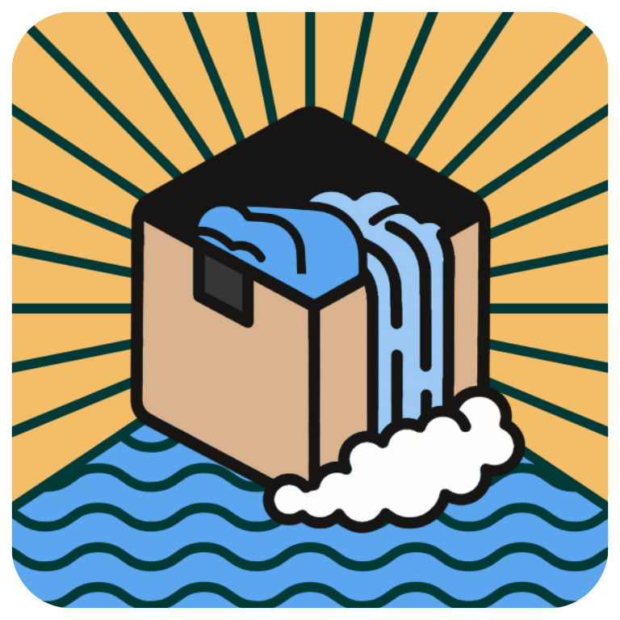

Container Cove
CPU
—
GPU
—
Starting Podman — please wait…
Creating Desktop App | Please Wait…
Welcome to Container Cove
Run containers as desktop apps with Podman — no terminal needed.
Install Podman first
Container Cove uses Podman to run your apps. Open the install guide, install Podman, then come back and click Retry.
1
Add an app
Click the ↑ button in the toolbar or browse Docker Hub to add a container. Volume mounts keep your data safe across restarts.
2
Launch it
Click an app's icon to start the container. If it has a Web UI, it opens automatically as a dedicated desktop window — no browser needed.
3
Desktop shortcuts
Right-click any installed app to create a shortcut on your Desktop. Double-clicking it launches the container and opens its Web UI.
4
Logs & metrics
Click anywhere on a card (not the icon) to open its detail panel — live logs, CPU/memory charts, health status, and settings.
Confirm action
Environment Variables
Volumes
Edit App
Environment Variables
Volumes
Docker Hub
Browse popular images
Settings
Storage
App data location
~/.container-cove
Startup
Containers
Updates
Release channel
Privacy & Security